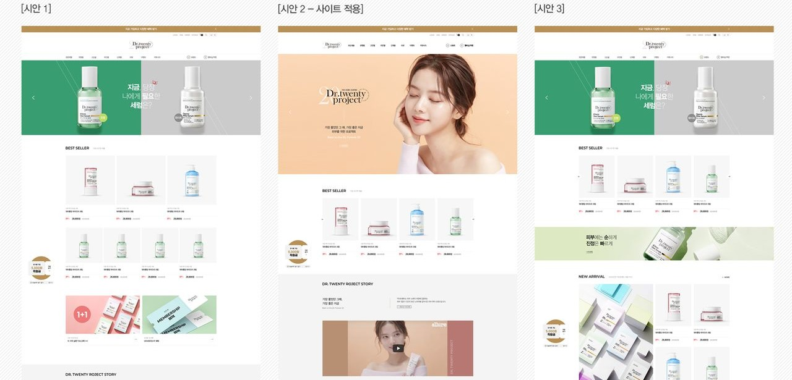

Portfolio — Yeon's Design
브랜드를 이해하고 디자인합니다.

About
제품을 이해하고,
브랜드에 맞는 디자인을 합니다.
상세페이지, 기획전, SNS 콘텐츠부터 인쇄물까지 다양한 온·오프라인 디자인을 해왔습니다.
제품의 특성과 전달해야 할 메시지를 파악하고, 이미지와 카피, 정보 구성을 고려해 디자인합니다. 콘텐츠 기획부터 최종 제작까지 직접 진행하며 매체에 맞는 표현과 브랜드의 일관성을 중요하게 생각합니다.
E-commerce · Digital Content · Print
Selected Work